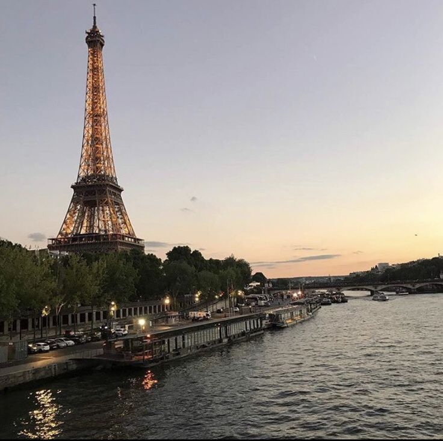
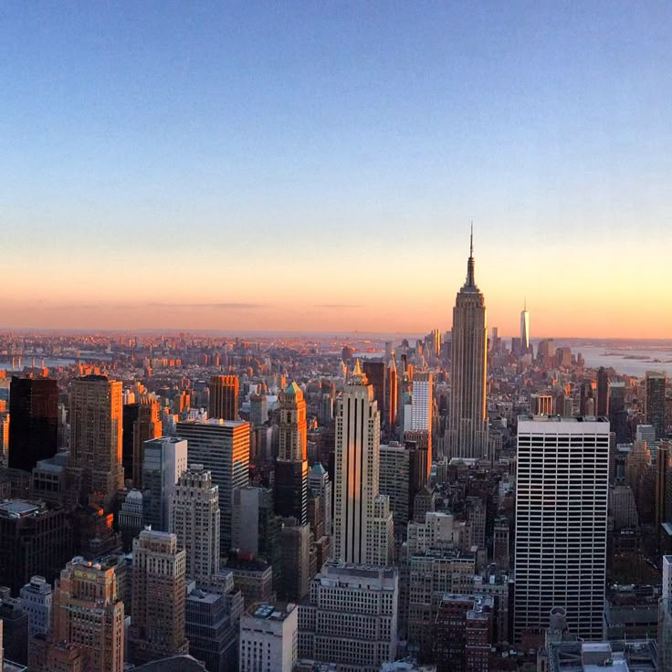
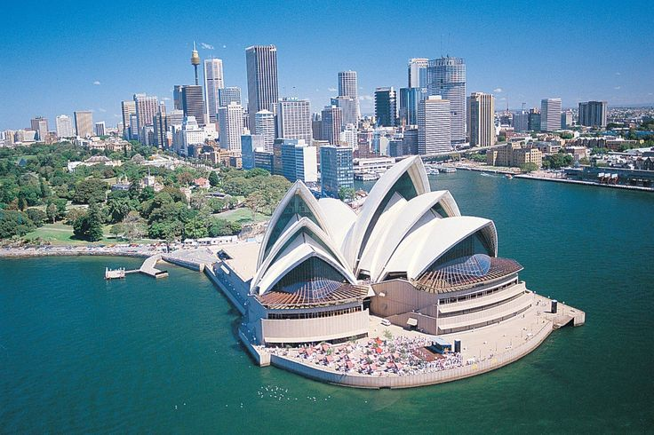
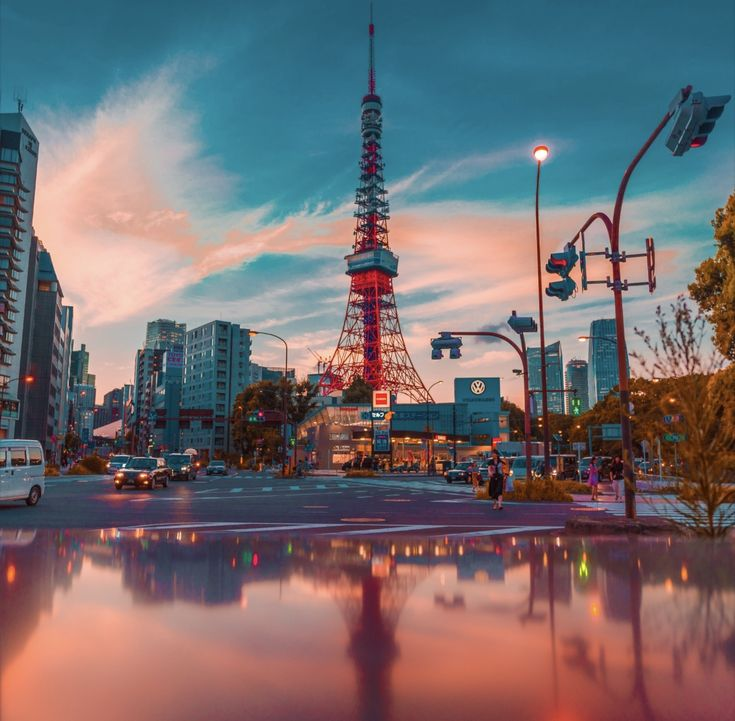
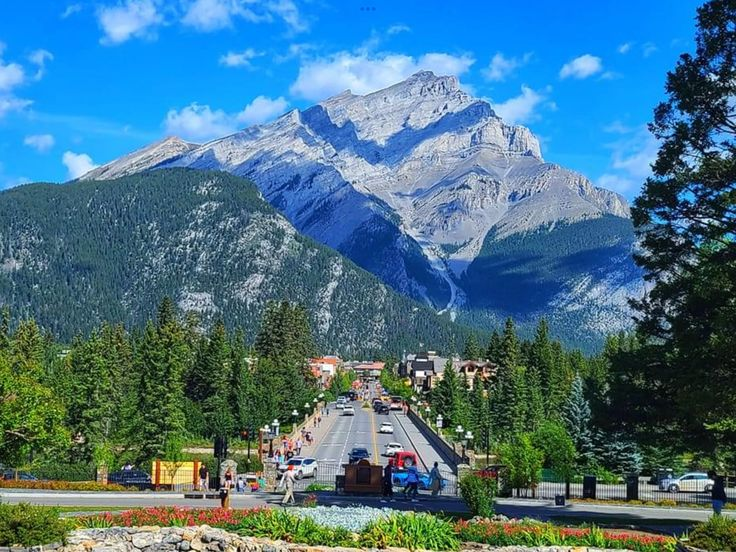
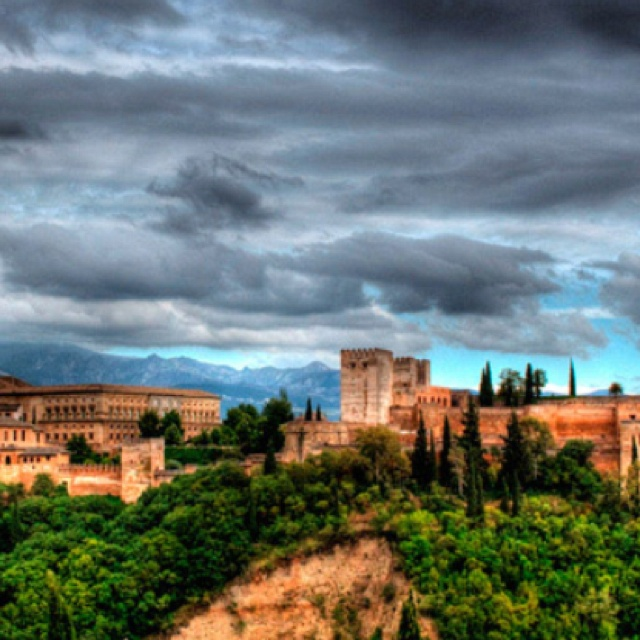
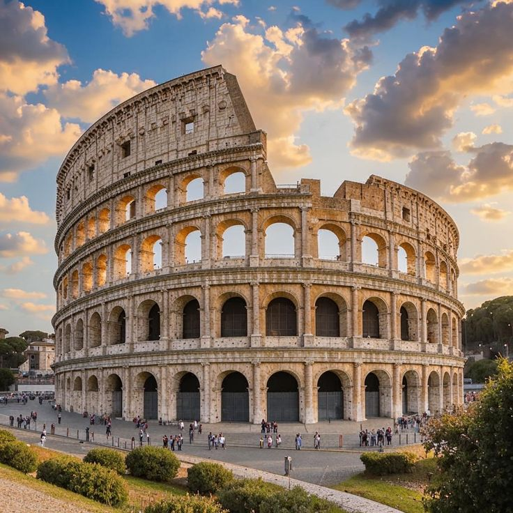
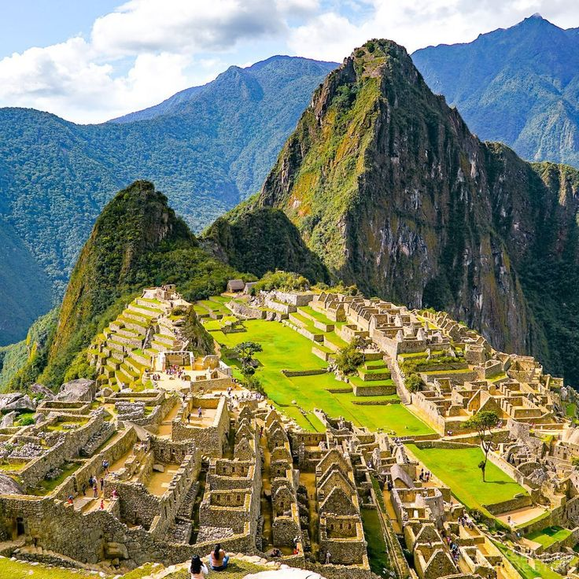
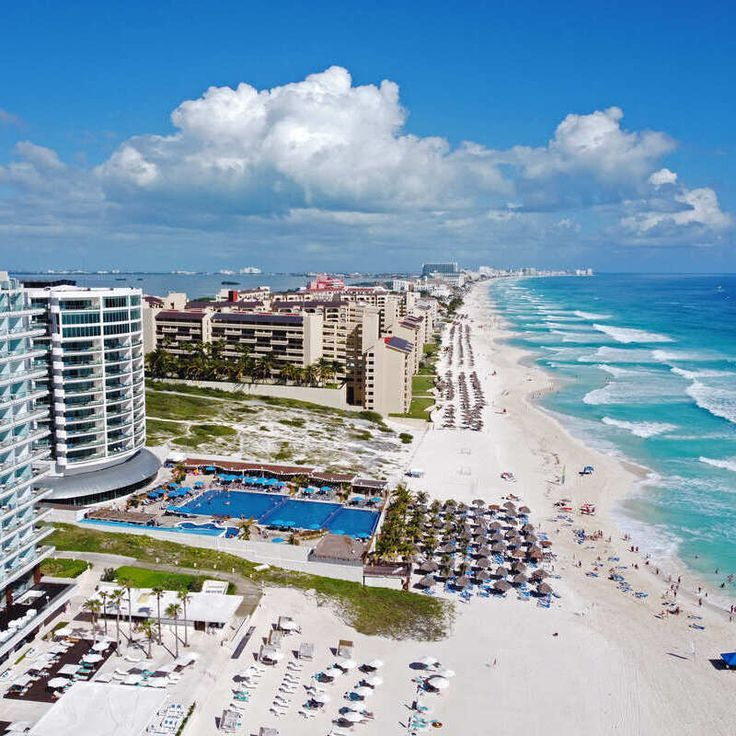

 |
PARIS, FRANCIA
París es uno de los destinos turísticos más visitados del mundo, famoso por su historia, arte y gastronomía. Los lugares imprescindibles incluyen la Torre Eiffel, el Museo del Louvre, la Catedral de Notre Dame, el Arco del Triunfo en los Campos Elíseos y el bohemio barrio de Montmartre con la basílica del Sagrado Corazón
Iconos Principales:
Torre Eiffel: El símbolo de la ciudad, espectacular tanto de día como iluminada de noche.
El Louvre: El museo más grande del mundo, hogar de la Mona Lisa.
Catedral de Notre Dame: Obra maestra gótica en la Île de la Cité.
Arco del Triunfo y Campos Elíseos: Monumento histórico que ofrece vistas impresionantes de la ciudad.
|
 |
NEW YORK
Nueva York es un destino vibrante con iconos mundiales, destacando Times Square, Central Park, la Estatua de la Libertad, el Empire State Building y el Puente de Brooklyn como paradas obligatorias. La ciudad ofrece experiencias diversas como ver un show de Broadway, cruzar el High Line, explorar museos y disfrutar vistas desde miradores como el SUMMIT.
Iconos Principales:
Broadway: Disfruta de musicales y obras de teatro de clase mundial.
Museo Americano de Historia Natural: Famoso por sus exhibiciones de dinosaurios.
Metropolitan Museum of Art (The Met): Uno de los museos de arte más grandes del mundo.
Chinatown y Little Italy: Barrios llenos de cultura y gastronomía.
|
 |
AUSTRIALIA
Australia ofrece destinos icónicos como la Ópera de Sídney y la Gran Barrera de Coral, junto con maravillas naturales como el monolito Uluru y la carretera costera Great Ocean Road. Otros lugares destacados incluyen el Parque Nacional Kakadu, las playas de la Gold Coast, la vibrante Melbourne y la inexplorada Tasmania
Iconos Principales:
Great Ocean Road (VIC): Ruta costera famosa por las formaciones rocosas de los "Doce Apóstoles".
Parque Nacional Kakadu (NT): Patrimonio de la Humanidad con arte rupestre antiguo y naturaleza salvaje.
Gold Coast (QLD): Conocida por sus rascacielos frente al mar, surf y parques temáticos.
Melbourne (VIC): Capital cultural, conocida por sus cafés, arte callejero y la catedral de San Pablo.
|
 |
TOKYO, JAPON
Japón ofrece una mezcla fascinante de tradición y modernidad, con destinos imperdibles como el icónico Monte Fuji, la histórica ciudad de Kioto (templos y bosques de bambú), y la vibrante metrópolis de Tokio con su cruce de Shibuya. Otros puntos destacados incluyen el Castillo Himeji, el Parque Nara y la histórica Hiroshima
Iconos Principales:
Kioto: Epicentro cultural con más de 1,000 templos, incluyendo el Pabellón de Oro (Kinkaku-ji) y Kiyomizu-dera.
Castillo Himeji: El castillo más espectacular y mejor conservado del país.
|
 |
CANADA
Canadá es un destino turístico destacado por su impresionante belleza natural, parques nacionales, montañas y ciudades cosmopolitas. Lugares imperdibles incluyen el Parque Nacional Banff (Alberta) por sus lagos glaciares, las Cataratas del Niágara (Ontario), y ciudades culturales como Vancouver, Toronto y Quebec. Ofrece aventuras todo el año, desde esquí en Whistler hasta observación de auroras boreales.
Iconos Principales:
Montañas Rocosas y Parque Nacional Banff (Alberta): Famoso por el lago Louise y el lago Moraine, ideal para senderismo, acampar y avistar fauna como osos y alces.
Ottawa (Ontario): La capital del país, conocida por la Colina del Parlamento y el Canal Rideau, que en invierno se convierte en la pista de hielo más larga del mundo
|
 |
ESPAÑA
España es uno de los destinos turísticos más populares del mundo, famoso por su diversidad geográfica, impresionante patrimonio histórico, playas de ensueño y gastronomía. Destacan ciudades como Madrid y Barcelona, la arquitectura andaluza, las islas Baleares y Canarias, y un clima agradable, ideal para disfrutar de festivales y cultura durante todo el año
Iconos Principales:
Madrid: El corazón de España, destaca por el Museo del Prado, el Parque del Retiro y su ambiente vibrante.
Andalucía: Sevilla (flamenco), Granada (La Alhambra) y Córdoba (Mezquita)
|
 |
TURQUIA
Turquía es un destino turístico único que conecta Europa y Asia, famoso por su gran historia, cultura y arquitectura impresionante. Cuenta con ciudades llenas de tradición, paisajes increíbles y una gastronomía muy variada. Es un lugar ideal para quienes buscan conocer culturas diferentes, visitar monumentos históricos y disfrutar de experiencias únicas.
Iconos Principales:
Gastronomía: Platillos como el kebab, baklava y el té turco son muy representativos.
Cultura e historia: Turquía tiene una mezcla de influencias romanas, bizantinas y otomanas.
|
 |
ROMA
Roma es la capital de Italia y uno de los destinos turísticos más importantes del mundo. Es conocida como la “Ciudad Eterna” por su gran historia que se remonta a miles de años. Destaca por su impresionante arquitectura, monumentos antiguos y su influencia en la cultura, el arte y la religión. Es ideal para quienes quieren conocer historia y disfrutar de una ciudad llena de vida.
Iconos Principales:
Gastronomía: Platillos como la pasta, pizza y gelato son muy representativos.
Plazas y calles: Roma está llena de plazas históricas y calles antiguas con mucho encanto.
|
 |
MACHU PICHU
Machu Picchu es una antigua ciudad inca ubicada en Perú, considerada una de las maravillas del mundo moderno. Se encuentra en lo alto de las montañas de los Andes y es famosa por su impresionante arquitectura, su historia y sus paisajes naturales. Es un destino ideal para quienes buscan aventura, cultura y contacto con la naturaleza.
Iconos Principales:
Turismo de aventura: Actividades como senderismo y recorridos guiados son muy populares.
Historia y cultura: Representa una parte importante de la civilización inca y su legado.
|
 |
CANCUN
Cancún es uno de los destinos turísticos más importantes de México y del mundo, ubicado en el estado de Quintana Roo. Es famoso por sus playas de arena blanca, aguas color turquesa y su clima cálido durante casi todo el año. Ofrece una gran variedad de actividades como deportes acuáticos, excursiones, cultura maya y una vida nocturna muy activa, lo que lo convierte en un lugar ideal para todo tipo de viajeros.
Iconos Principales:
Playas: Cancún destaca por sus hermosas playas como Playa Delfines, ideales para relajarse, nadar y disfrutar del mar Caribe.
Zona Hotelera: Es el corazón turístico, donde se concentran hoteles, restaurantes, centros comerciales y antros.
|